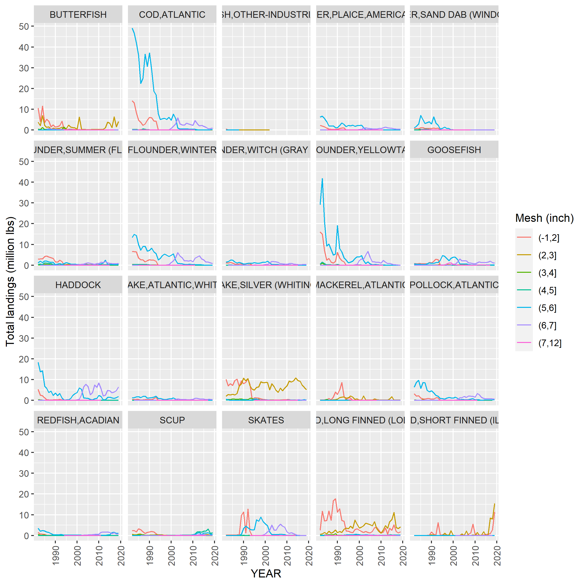

Analysis of Georges Bank catch by gear type
Source:vignettes/GBFleetDefinitions.Rmd
GBFleetDefinitions.RmdSpatial Extent
Statistical areas are used to define the Georges Bank footprint for pulling the landings data by gear
crs <- 4326
# read in coastline and GB shape file
coast <- sf::st_read(here::here("data-raw/gis", 'NES_LME_coast.shp'), quiet = T) %>%
sf::st_transform(.,crs=crs)
GB_strata <- sf::st_read(here::here("data-raw/gis","Statistical_Areas_2010.shp"),quiet=T) %>%
sf::st_transform(.,crs=crs) %>%
dplyr::filter(Id %in% c(521, 522, 523, 524, 525, 526, 538, 551, 552, 561, 562, 537) )
centroids <- sf::st_coordinates(sf::st_centroid(GB_strata))
GB_strata <- cbind(GB_strata,centroids)
#plot map
ggplot2::ggplot(data=coast) +
ggplot2::geom_sf() +
ggplot2::geom_sf(data=GB_strata,fill="grey") +
ggplot2::geom_text(data=GB_strata,ggplot2::aes(x=X,y=Y,label=Id),size=2) +
ggplot2::coord_sf(xlim = c(-76,-65), ylim = c(38,44))
Gear Types
There are a total of 52 unique NEGEAR2 codes (found in the cfdbs.gear table). However on Georges Bank not all of these fishing gears are used. A subset of 45 gear types are used. All gear codes:
Aggregating Gear Types
Each gear type is designed to target particular species. Some gear types may catch predominantly one species (eg. Lobsters traps) where others may catch multiple species (bottom trawls). We aim to aggregate the gear types into fleets using similarities in the catch among the gear types. To achieve this we will adopt an agglomerative hierarchical, nearest neighbor clustering method (Manly (2017)) using euclidean distance as the measure of distance between groups. In this approach all gear types begin in separate groups. Groups that are similar (similar catch, defined by a distance measure) are then merged until at some distance all gear types belong to a single group. The variables used to determine the grouping are the species caught, measured by landings (in lbs)
Landings data, by gear type, are pulled from the database.
channel <- dbutils::connect_to_database("server","id")
get_landings_by_data(channel,percentLanded=0.90,area=c(cfdbs::EPUs$data[["GB"]],537),outDir=here::here("data"))The resulting data are then formatted as a data frame (or matrix) where each gear type is represented in a row and each species in a column. Each cell being the landings of the species by the gear type. Note: There will be many zeros in the data frame representing gear types that do not catch a particular species.
The variables are often standardized so that all of the variables are equally important in determining distances. We standardize each variable to have zero mean and unit variance. At this point pairwise distances between all gear types are calculated using the Euclidean distance function
\[d_{i,j} = \left( \sum_{k=1}^p(x_{i,k}-x_{j,k})^2 \right) ^{1/2} \] where \(x_{i,k}\) is the landings of species \(k\) by gear type \(i\) and \(x_{j,k}\) is the landings of species \(k\) by gear type \(j\). \(d_{i,j}\) is the measure of distance between gear type \(i\) and \(j\)
A dendrogram is then formed using the agglomerative hierarchical
process. This process is carried out using the statistical package cluster (Maechler et al.
(2021)) in R.
Approach: Use all gear types
For each gear type the landings of each species are aggregated over time and then ordered from the most abundant to least abundant. To reduce the number of variables (species) in the analysis we only use species which comprise 90% of the total landings for each gear type.
clusterObj <- cluster_analysis_all_gears()
plot(clusterObj,ask=T,which.plots=2,main="Complete gear list using 90% landing from each gear",xlab="")
The dendrogram obtained from a nearest-neighbor, hierarchical cluster analysis on all gear types used in the Georges Bank Ecological Production unit as defined by statistical areas
Note: Low values of the agglomerative coefficient indicate tight clustering of gears types. Larger values indicate less well formed clusters.
Approach: Use gears responsible for most landings
Total landings, aggregated over time, are ordered by gear type. The gear types that contribute to 99% of total landings are selected and used in the cluster analysis
clusterObj <- cluster_analysis_filter_gears(filterByLandings=.99)
plot(clusterObj$top,ask=T,which.plots=2,main="Gear types contributing to 99% of total landings",xlab="")
The dendrogram obtained from a nearest-neighbor, hierarchical cluster analysis on a subset of gear types in the Georges Bank Ecological Production unit as defined by statistical areas. Gear types were selected based on their contribution to 99% of landings
Species landings by gear
Time series of species caught by each gear type. To reduce the number of panels in each figure, species caught < 30% of the time are not displayed. For example reporting of landings started in 1964 (56 years ago). So any species that have reported landings in fewer that 17 years are not displayed.
## # A tibble: 1 × 2
## NEGEAR2 GEARNM
## <chr> <chr>
## 1 01 LONGLINE, BOTTOM## # A tibble: 2 × 2
## NEGEAR2 GEARNM
## <chr> <chr>
## 1 02 HANDLINE
## 2 02 HANDLINE,AUTO JIG
## # A tibble: 10 × 2
## NEGEAR2 GEARNM
## <chr> <chr>
## 1 05 TRAWL,OTTER,BOTTOM,FISH
## 2 05 TRAWL,OTTER,BOTTOM,CRAB
## 3 05 TRAWL,OTTER,BOTTOM,SCALLOP
## 4 05 TRAWL,OTTER,BOTTOM,TWIN
## 5 05 TRAWL,OTTER,BOTTOM,RUHLE
## 6 05 TRAWL,OTTER,BOTTOM,LOBSTER
## 7 05 TRAWL,OTTER,BOTTOM PAIRED
## 8 05 TRAWL,OTTER,BOTTOM,HADDOCK SEPARATOR
## 9 05 TRAWL,OTTER,BOTTOM,SHRIMP
## 10 05 TRAWL,OTTER,BOTTOM,OTHER/NK SPECIES
## # A tibble: 6 × 2
## NEGEAR2 GEARNM
## <chr> <chr>
## 1 10 GILL NET, FIXED OR ANCHORED,SINK, OTHER/NK SPECIES
## 2 10 GILL NET,SET /STAKE, SEA BASS
## 3 10 GILL NET,STAKE,OTHER
## 4 10 GILL NET,SET, SALMON
## 5 10 GILL NET,SET, CRAB
## 6 10 GILL NET,ANCHORED-FLOATING, FISH
## # A tibble: 5 × 2
## NEGEAR2 GEARNM
## <chr> <chr>
## 1 12 PURSE SEINE, OTHER/NK SPECIES
## 2 12 PURSE SEINE, HERRING
## 3 12 PURSE SEINE, MACKEREL
## 4 12 PURSE SEINE, MENHADEN
## 5 12 PURSE SEINE, TUNA
## # A tibble: 2 × 2
## NEGEAR2 GEARNM
## <chr> <chr>
## 1 13 DREDGE, SCALLOP,BAY
## 2 13 DREDGE, SCALLOP,SEA
## # A tibble: 4 × 2
## NEGEAR2 GEARNM
## <chr> <chr>
## 1 14 POUND NET, OTHER/NK SPECIES
## 2 14 POUND NET, CRAB
## 3 14 POUND NET, FISH
## 4 14 POUND NET, HORSESHOE CRAB
## # A tibble: 1 × 2
## NEGEAR2 GEARNM
## <chr> <chr>
## 1 17 TRAWL,OTTER,MIDWATER PAIRED
## # A tibble: 7 × 2
## NEGEAR2 GEARNM
## <chr> <chr>
## 1 18 POTS + TRAPS,OTHER/NK SPECIES
## 2 18 POTS + TRAPS,FISH
## 3 18 POTS + TRAPS,EEL
## 4 18 POTS + TRAPS,CONCH
## 5 18 POTS + TRAPS,OCTOPUS
## 6 18 POTS + TRAPS,TURTLE
## 7 18 POTS + TRAPS, HAGFISH
## # A tibble: 8 × 2
## NEGEAR2 GEARNM
## <chr> <chr>
## 1 20 POT/TRAP, LOBSTER OFFSH NK
## 2 20 POT/TRAP, LOBSTER OFFSH WOOD
## 3 20 POT/TRAP, LOBSTER OFFSH WIRE
## 4 20 POT/TRAP, LOBSTER OFFSH WD/WR
## 5 20 POT/TRAP, LOBSTER OFFSH WD/NET
## 6 20 POT/TRAP, LOBSTER OFFSH WR/NET
## 7 20 POT/TRAP, LOBSTER OFFSH PLASTIC
## 8 20 POT/TRAP, LOBSTER OFFSH CONICAL
## # A tibble: 8 × 2
## NEGEAR2 GEARNM
## <chr> <chr>
## 1 21 POT/TRAP, LOBSTER INSH NK
## 2 21 POT/TRAP, LOBSTER INSH WOOD
## 3 21 POT/TRAP, LOBSTER INSH WIRE
## 4 21 POT/TRAP, LOBSTER INSH WD/WR
## 5 21 POT/TRAP, LOBSTER INSH WD/NET
## 6 21 POT/TRAP, LOBSTER INSH WR/NET
## 7 21 POT/TRAP, LOBSTER INSH PLASTIC
## 8 21 POT/TRAP, LOBSTER INSH CONICAL## # A tibble: 2 × 2
## NEGEAR2 GEARNM
## <chr> <chr>
## 1 30 POTS + TRAPS,CRAB OTHER
## 2 30 POTS + TRAPS,BLUE CRAB
## # A tibble: 1 × 2
## NEGEAR2 GEARNM
## <chr> <chr>
## 1 37 TRAWL,OTTER,MIDWATER
## # A tibble: 8 × 2
## NEGEAR2 GEARNM
## <chr> <chr>
## 1 38 SCRAPES
## 2 38 DREDGE, OTHER/NK SPECIES
## 3 38 DREDGE, CLAM
## 4 38 DREDGE, CRAB
## 5 38 DREDGE, CONCH
## 6 38 DREDGE, MUSSEL
## 7 38 DREDGE, CLAM, HYDRAULIC
## 8 38 DREDGE, URCHIN## # A tibble: 1 × 2
## NEGEAR2 GEARNM
## <chr> <chr>
## 1 40 DREDGE, SURF CLAM + OCEAN QUAHOGears that make up < 1% landings
The remaining gears (not contributing to 99% of the landings) were used in a cluster analysis to determine how similar these gears are to each other, since 100% of landings should be accounted for.
plot(clusterObj$bottom,ask=T,which.plots=2,main="Gear types contributing < 1% of total landings",xlab="")The dendrogram obtained from a nearest-neighbor, hierarchical cluster analysis on a subset of gear types in the Georges Bank Ecological Production unit as defined by statistical areas. Gear types were selected based on not contributing to top 99% of landings
Approach: Select gear types that catch species of interest
All gear types which catch any amount of the Species of interest are used in the cluster analysis. The hope was the set of gear types in which to begin the cluster analysis would be substantially less. The number of gears eliminated = 10. It is apparent that species of interest are caught across a broad class of gear types.
#focalSpecies <- readRDS(here::here("data-raw/data","focalspecies.rds"))
clusterObj <- cluster_by_focal_species(mskeyrun::focalSpecies)
plot(clusterObj,ask=T,which.plots=2,main="All gear types that land species of interest",xlab="")
The dendrogram obtained from a nearest-neighbor, hierarchical cluster analysis on a subset of gear types in the Georges Bank Ecological Production unit as defined by statistical areas. All gear types that landed species of interest were selected
Bottom trawls (small/large mesh)
Over time (dates/references????) changes in regulations resulted in the requirement of fisherman to increase the mesh size in their nets. This allowed smaller fish to escape the nets. However there were, and still are, exemptions to this regulation allowing fishermen to fish with smaller meshed nets depending on the time of the year and the area they fish. However all of the associated landings are flagged as using the same gear type code. Since the change in regulations dictate a change in the composition of species caught over time, this gear type needs to be investigated separately. The data base holds information based on the mesh size of the otter trawl nets for NEGEAR code = 5 (from 1982 onward).
Below are plots of species caught in the otter trawl (making up 96% of the total catch from 1964 to 2020) by mesh size (in inches). Note that the figure begins in 1982. Any trip without a mesh size attributed is not displayed, this includes all trips prior to 1982. A lack of mesh size accounts for approximately 20% of landing post 1982 and approximately 50% of all landings


Decision
This exploratory study resulted in the following designation of Fleets